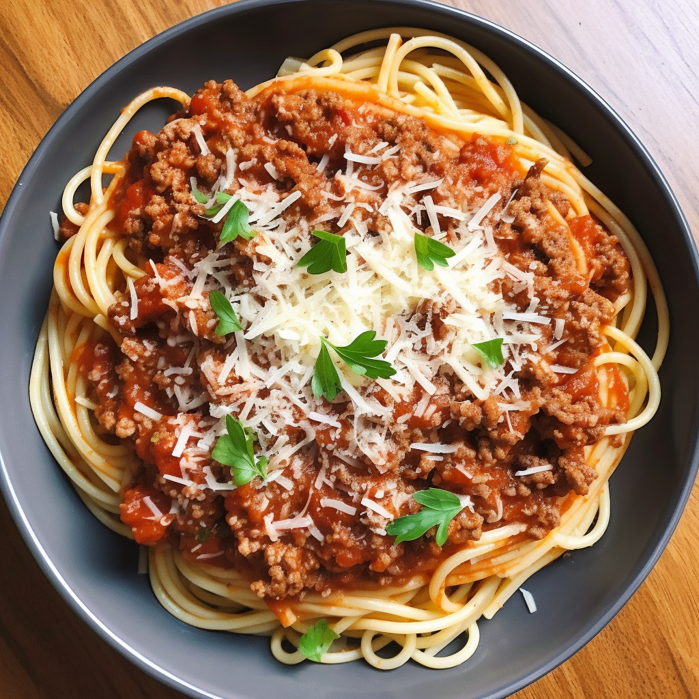
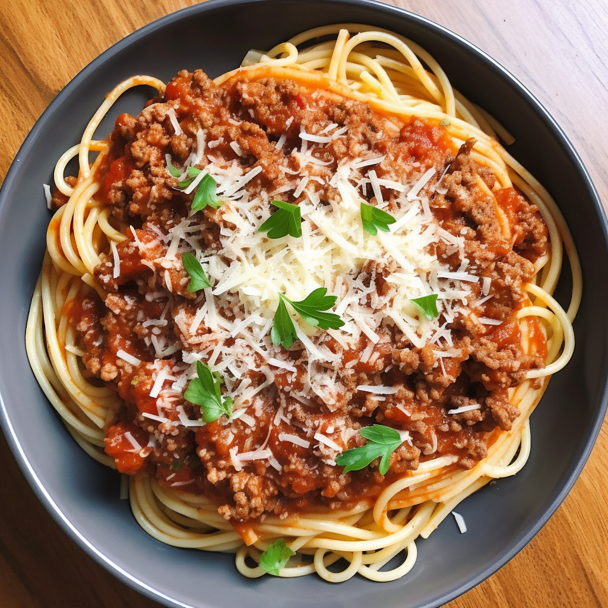

Spaghetti Bolognese
Description
Spaghetti Bolognese is a classic Italian dish that consists of spaghetti pasta, tomato-based sauce,
and ground meat, typically beef or pork.
sauce is often made with a combination of onions, garlic, canned tomatoes, tomato paste,
herbs such as basil and oregano, and sometimes red wine.
bolognese is a hearty and satisfying meal that is popular around the world.
It is often considered a comfort food and is a favorite in many households.
Ingredients
- 12g Beef stock mix.
- 1 carrots.
- 1 Brown onion
- 2 Garlic cloves
- soy sauce
- Grated Italian cheese
- Dried Oregano
- 210g Canned finely chopped tomatoes
- 16g tomato paste
- 250g minced beef
- 190g Spaghetti
- parsley
- Dried basil
Instructions
- Step 1
Put a saucepan on a medium heat (this will be for the spaghetti later), peel and finely chop the onion.
Peel and finely chop the carrot
- Step 2
Heat a large non-stick pan with a drizzle of olive oil over a medium-high heat.
Once heated add prepared carrot , onion and a pinch of salt and cook until beginning to soften.
- Step 3
Peel and finely chop the garlic.
- Step 4
When the onion and carrots begin to soften, add the mince to the pan increase heat to high.
Cook until browned all over, breaking it up as you go.
- Step 5
Add spaghetti to the pot of now boiling water , Add a pinch of salt and bring to the boil over a hight heat.
- Step 6
Cook the spaghetti for 8-10 minutes, drain and return to pot until serving.
- Step 7
Dissolve the beef stock and soy sauce in 100ml of boiled water
- Step 8
add the garlic , tomato paste, stock, chopped tomatoes , basil and oregano to the pan.
- Step 9
Season with a grind of black pepper, bring to the boil over a high heat and cook until thickened.
- Step 10
Chop the parsley.
Serve the bolognese over the spaghetti top with the grated cheese and parsley.
page 2